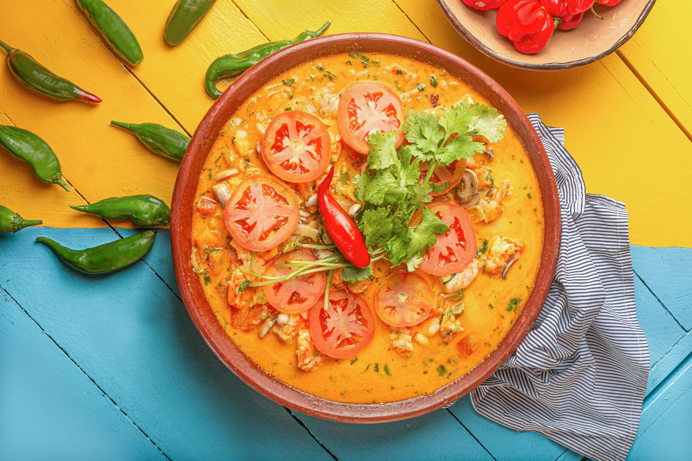
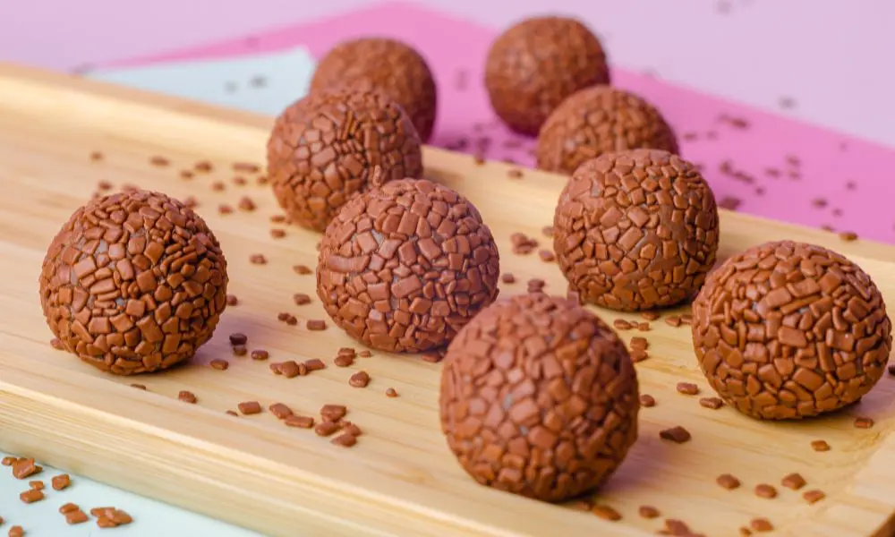
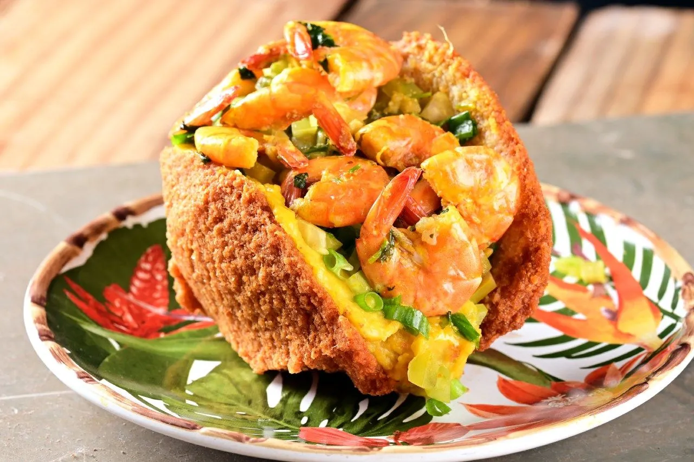

Feijoada simples
Rende 6 porções · ⏱️ 2h
Clássico com feijão‑preto e carnes salgadas, servido com arroz, couve e laranja.
Ingredientes
- 500g feijão‑preto (de molho)
- 300g carne seca dessalgada
- 200g linguiça calabresa
- 150g paio
- 1 cebola, 3 dentes de alho, louro, sal
Modo de preparo
- Cozinhe o feijão com louro até ficar macio.
- Doure cebola e alho; junte carnes em rodelas e o feijão; ferva até encorpar.
- Acerte o sal e sirva com arroz, couve refogada e farofa.
Clássico

Moqueca capixaba/baiana
Rende 4 porções · ⏱️ 40min
Peixe em postas com tomates, pimentões e cheiro‑verde. Na versão baiana, use dendê e leite de coco.
Ingredientes
- 800g peixe (robalo, cação ou namorado)
- 2 tomates, 1 cebola, 1 pimentão
- coentro, limão, sal, pimenta
- (opcional) 2 c.s. dendê + 200ml leite de coco
Modo de preparo
- Tempere o peixe com sal, pimenta e limão.
- Em panela, intercale camadas de peixe e hortaliças; tampe e cozinhe 20–25min.
- Para a versão baiana, finalize com dendê e leite de coco.
Peixes
Pão de queijo de liquidificador
Rende 20 unidades · ⏱️ 30min
Fácil e fofinho, perfeito para café da tarde.
Ingredientes
- 1 xíc. leite · 1/2 xíc. óleo · 2 ovos
- 1 e 1/2 xíc. polvilho doce
- 1 xíc. queijo minas meia‑cura ralado · sal
Modo de preparo
- Bata tudo, despeje em forminhas e asse a 200°C por 20–25min.
Lanche

Brigadeiro clássico
Rende 15 unidades · ⏱️ 15min
O doce da festa, ponto macio e sabor intenso de chocolate.
Ingredientes
- 1 lata leite condensado
- 2 c.s. cacau em pó
- 1 c.s. manteiga
- Confeitos para enrolar
Modo de preparo
- Cozinhe mexendo até desgrudar do fundo (ponto de brigadeiro).
- Esfrie, enrole e passe no granulado.
Sobremesa

Acarajé prático
Rende 10 unidades · ⏱️ 1h
Bolinhos de feijão‑fradinho fritos, servidos com vatapá, caruru e pimenta.
Ingredientes
- 500g feijão‑fradinho descascado
- 1 cebola, sal
- óleo (ou dendê) para fritar
Modo de preparo
- Triture o feijão com cebola e sal; bata até aerar.
- Modele e frite por imersão; sirva com vatapá e pimenta.
Baiano